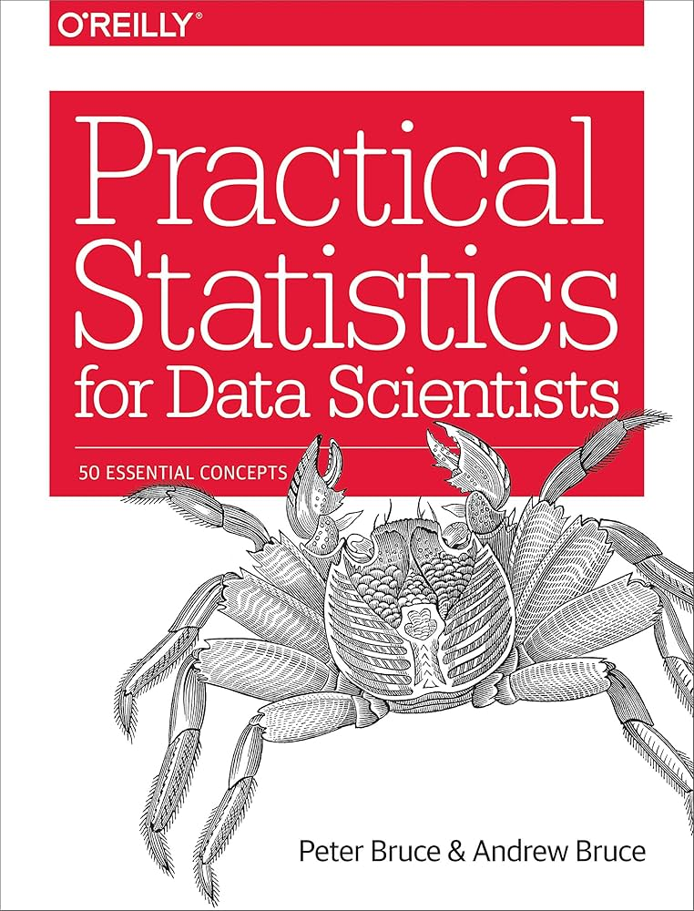

Return to home page
Books

'R for Data Science'
Hadley Wickham & Garrett Grolemund
Following my initial deepdive into all the primary tools/languages used in data analysis/science, I immediately gravitated towards R for its statistics-oriented development. After following through several
YouTube videos detailing the basics of the programme, I discovered this book and used it to learn the fundamentals of R data wrangling, visualisation and coding etiquette from one centralised source
as opposed to dozens of channels. While some of the syntax is now outdated, this book served me as an excellent resource covering the essential packages in an easily digestible format.

'Practical Statistics for Data Scientists: 50 Essential Concepts'
Peter Bruce & Andrew Bruce
While the previous book covered the practical basics of R, it didn't dwell too much in the realm of statistics. 'Practical Statistics for Data Scientists' is an excellent book which is not only oriented for
R users, but to anyone with a spotty or limited knowledge of statistics - I still find myself returning to this book if I need refresher on a concept or overcomplicate a project.
The book covers EDA, data visualisation, sampling distribution, hypothesis/p-value testing and both supervised and unsupervised machine learning (regressions, classification & cluster analysis).
Channels
Hefin Rhys' YouTube Channel
Rhys' channel contains only a handful of videos, all in the format of screencast tutorials (some of them taken from his live lectures at QMUL), but with each upload he manages to explain topics of various
difficulties in an engaging and detailed manner. His videos cover the fundamentals of R, the core of the tidyverse package (dplyr + GGplot) and machine learning basics such as cluster analysis and logistical
regressions. For anyone looking to get started with R programming, this video is where you should begin.